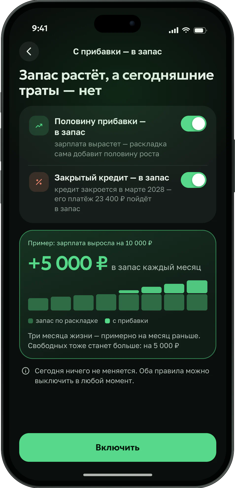

Вывод, срочный конверт, прибавка
Вывести деньги так же просто, как внести. Цель с датой можно сделать срочной. Будущую прибавку — заранее направить в запас.
Последствия видны до действия: запас в месяцах, проценты, стаж.
Перевод в другой банк

Срочный конверт
С прибавки — в запас
